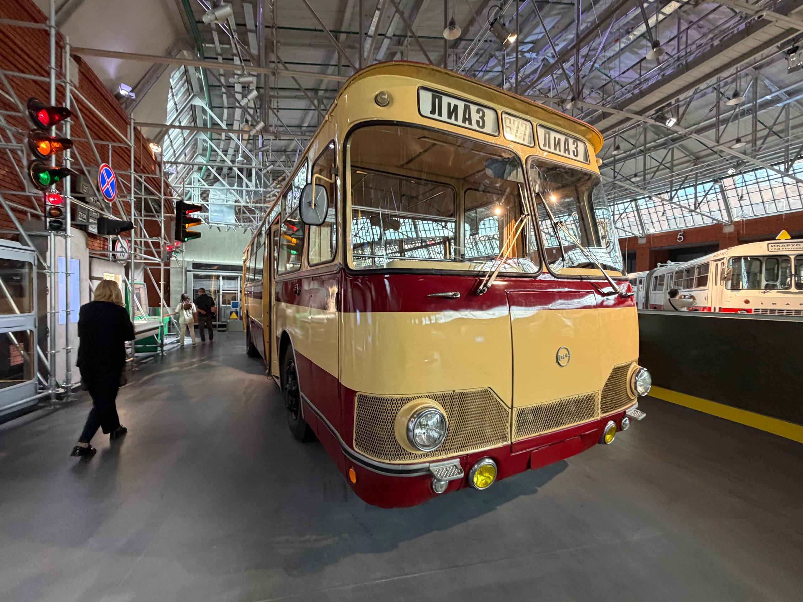
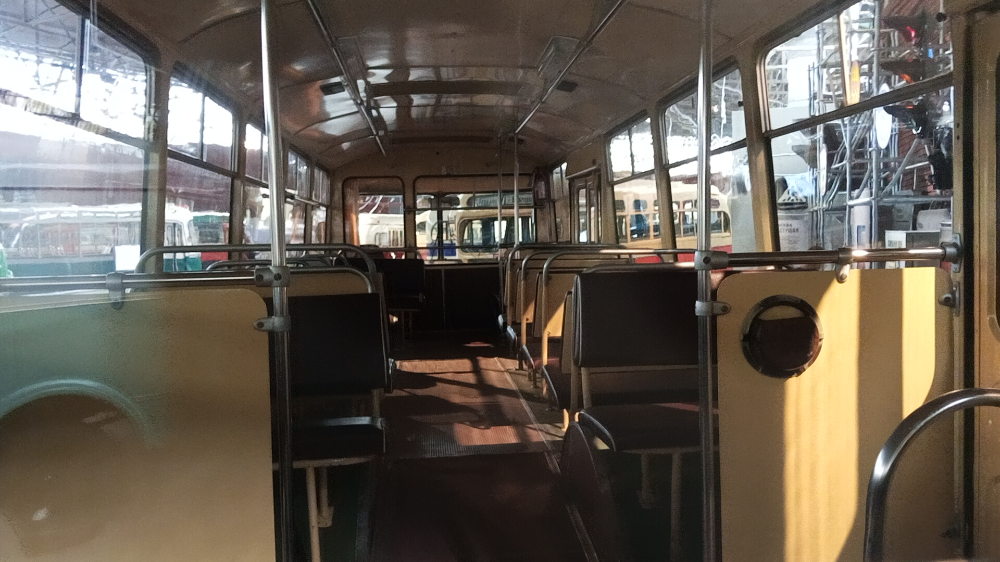
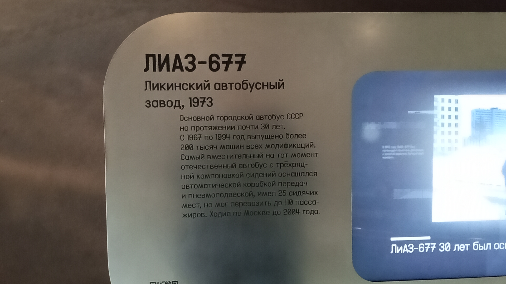

ЛиАЗ-677М № 5621
Перед вами самый массовый советский городской автобус большой вместимости. Данный экземпляр (бортовой № 5621) выпущен в 1989 году и сейчас является частью коллекции Музея Транспорта Москвы.
В народе автобус получил прозвища «луноход» (за плавность хода) и «скотовоз» (за характерный запах и низкие сиденья в салоне).
Общая информация
| Параметр | Значение |
|---|---|
| Город | Москва 🇷🇺 |
| Транспортная компания | Музей Транспорта Москвы |
| Модель | ЛиАЗ-677М |
| Год выпуска | 1989 |
| Бортовой № | 5621 |
| Текущее состояние | Памятник / Музейный |
Технические характеристики
Основные параметры
Длина: 10,4 м
Ширина: 2,5 м
Высота: 3,1 м
Вместимость: 110 пассажиров
Силовая установка
Двигатель: ЗИЛ-375Я5, карбюраторный (бензиновый)
Мощность: 175 л.с.
КПП: 2-ступенчатая автоматическая гидромеханическая
Расположение: под полом салона
История экспоната
Выпуск
Автобус с бортовым номером 5621 выпущен на Ликинском автобусном заводе.
Выставка на ВВЦ
Экспонировался у Главного входа ВВЦ.
Выставка на Новом Арбате
Участие в выставке в честь 50-летия Мосгортранса.
Регулярные выставки на ВДНХ/ВВЦ
Ежегодно (в День города или День России) автобус выставлялся у Главного входа ВВЦ.
Парад на Театральном проезде
Участие в Параде в честь 90-летия автобусного движения в Москве.
Выставка на Чистопрудном бульваре
Машина была представлена на выставке ретротехники.
Репетиция парада
Участие в ночной репетиции автобусного парада на Фрунзенской набережной.
ВДНХ, павильон № 75
Экспонат выставки в павильоне № 75.
Филиал «Центральный»
Сфотографирован на площадке на улице Дениса Давыдова.
Музей на Рогожском Валу
Автобус экспонировался в музее «Московский транспорт».
Музей Транспорта Москвы
Экспонат представлен в постоянной экспозиции.
Фотогалерея

📌 Музей Транспорта Москвы.
Экспонат 1973 года.

📌 Музей Транспорта Москвы.
Экспонат 1973 года.

📌 Музей Транспорта Москвы.
Салон, вид перед.

📌 Музей Транспорта Москвы.
Музейная информация.
Нажмите на фото для увеличения
«Наверное, нет человека, который хотя бы раз в жизни не ездил на этом автобусе. За характерный внешний вид и плавность хода его прозвали "луноходом", а за специфический запах в салоне — "скотовозом"».